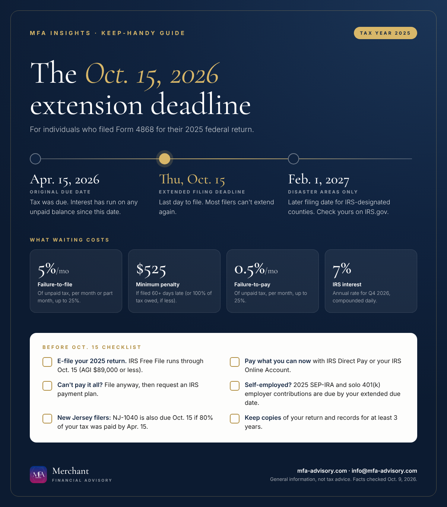

The short version
- Deadline: Thursday, Oct. 15, 2026, for 2025 individual returns on extension.
- The extension covered filing, not paying. Tax was due April 15, 2026, and interest has been running since.
- File even if you can't pay. The late-filing penalty is 10 times the late-payment penalty.
- Exceptions: Some disaster-area counties have until Feb. 1, 2027. New Jersey's extension only holds if you paid 80% by April 15.
About six months ago, millions of taxpayers asked the IRS for more time by filing Form 4868. That extra time runs out on Thursday, October 15, 2026. If your 2025 return is still on your to-do list, here is what you need to know about the October 15, 2026 tax deadline to finish cleanly and avoid penalties.

Who the 2026 tax extension deadline applies to
The deadline applies to individuals who requested an automatic six-month extension for their 2025 federal income tax return (Form 1040, 1040-SR or 1040-NR). If you requested it, your Form 4868 extended due date is Oct. 15, 2026. For most people, no further extension is available after that date.
Calendar-year C corporations that extended Form 1120 with Form 7004 are also generally due Oct. 15. The extended deadline for partnerships and S corporations was Sept. 15, 2026.
An extension to file is not an extension to pay
This is the most common misunderstanding we see. Your 2025 tax was due on April 15, 2026, even with an extension. Any balance you still owe has been building interest since then, and a late-payment penalty may also apply. Missing Oct. 15 adds a much larger late-filing penalty on top.
| Charge | How it works |
|---|---|
| Failure to file | 5% of unpaid tax for each month or part of a month the return is late, up to 25%. |
| Minimum late-filing penalty | If the return is more than 60 days late, at least $525 (for returns due in 2026) or 100% of the unpaid tax, whichever is less. |
| Failure to pay | 0.5% of unpaid tax per month, up to 25%. When both penalties apply in the same month, the late-filing penalty is reduced by the late-payment amount. |
| Interest | 7% a year for Oct. 1 to Dec. 31, 2026, compounded daily, on unpaid tax and penalties. |
The takeaway: filing on time matters more than paying in full. Filing by Oct. 15 stops the 5%-a-month failure-to-file penalty, even if you can't pay the whole balance yet.
Your checklist before October 15
- Gather what's missing. Late K-1s, corrected 1099s and brokerage statements are the usual holdups. If a document still hasn't arrived, ask your preparer how to handle it rather than missing the deadline.
- E-file. Electronic filing is faster and confirms receipt. IRS Free File remains available through Oct. 15, 2026 for guided preparation if your 2025 adjusted gross income was $89,000 or less. Free File Fillable Forms are open to everyone.
- Pay what you can now. Use IRS Direct Pay, your IRS Online Account, EFTPS, or a debit or credit card (card processors charge a fee). Every dollar paid now stops interest and penalties on that dollar.
- Choose direct deposit if you're due a refund. It's the fastest way to get it.
- Keep copies of your return and supporting records for at least three years.
If you can't pay the full balance
File anyway, pay as much as you can, then apply for an IRS payment plan. Individuals can usually request one online. Interest continues until the balance is paid. But if you filed on time and have an approved plan, the late-payment penalty drops from 0.5% to 0.25% a month while the plan is in place. That is one more reason to file by Oct. 15.
Self-employed? Don't miss your SEP-IRA contribution deadline
If you're self-employed and on extension, you can generally still make your 2025 SEP-IRA contribution by your extended due date. The same goes for the employer contribution to a solo 401(k). That can lower your 2025 tax bill even now. Traditional and Roth IRA contributions are different: the 2025 deadline for those was April 15, 2026, and an extension does not change it.
Live in a disaster area? IRS disaster relief may give you more time
The IRS has postponed deadlines for taxpayers in federally declared disaster areas. For several 2026 disasters, valid extension filers in the covered counties have until Feb. 1, 2027 to file their 2025 returns. These include affected counties in Indiana, Mississippi, Nebraska, Washington and West Virginia.
Relief is county-specific, and some notices say it covers filing only. Tax that was due April 15, 2026 may still be accruing interest. Check the IRS Tax relief in disaster situations page for your exact county and dates before relying on a later deadline.
New Jersey filers: the NJ-1040 extension deadline and the 80% rule
New Jersey's extended deadline for the NJ-1040 is also Oct. 15, 2026, but only if your extension is valid. The Division of Taxation requires that at least 80% of your 2025 New Jersey tax was paid by April 15, 2026, through withholding, estimated payments or a payment with your extension request. If you fell short, New Jersey can deny the extension and charge a late-filing penalty.
When you file, include a copy of your federal extension or your IRS confirmation number.
Quick answers
Can I get another extension past October 15?
Generally no. For most individual taxpayers, Oct. 15 is the final extended deadline. Narrow exceptions exist, for example for taxpayers in IRS-designated disaster areas.
What happens if I miss the tax extension deadline?
If you owe tax, the 5%-per-month failure-to-file penalty applies to the unpaid balance, up to 25%. Once the return is more than 60 days late, the minimum penalty is $525 (or 100% of the tax owed, if less), and interest keeps running. File as soon as you can to stop it growing.
What if I'm owed a refund?
There's no late-filing penalty when no tax is owed, but don't wait. Filing gets your money back sooner, and refund claims expire if you wait too long.
I missed April 15 and never filed an extension. Now what?
File as soon as possible and pay what you can. Penalties grow every month, so acting now limits the damage.
Have a question about this?
Ask us privately. Your question goes straight to our inbox, not onto the page, and we reply by email within one to three business days. Please don't include Social Security or account numbers.
Thanks, your question is in. We'll reply by email within one to three business days.
Sources
- IRS: Form 4868, Application for Automatic Extension of Time to File (2025)
- IRS IR-2026-101: Extension filers can use IRS Free File (Aug. 26, 2026)
- IRS: Failure to file penalty
- IRS: Failure to pay penalty
- IRS IR-2026-98: Interest rates remain the same for the fourth quarter of 2026
- IRS: Tax relief in disaster situations
- IRS NE-2026-05: Relief for severe storms in Nebraska, deadlines postponed to Feb. 1, 2027
- IRS: Payment plans (installment agreements)
- IRS: Retirement plans FAQs regarding SEPs (contribution deadline)
- IRS Publication 560: Retirement Plans for Small Business
- NJ Division of Taxation: Extensions of time to file (NJ-630)
Facts checked against the sources above as of October 9, 2026. This article is general information, not tax, legal, or financial advice, and reading it does not create a client relationship. Tax rules change and every situation is different; confirm the details for your situation with a qualified professional before acting.